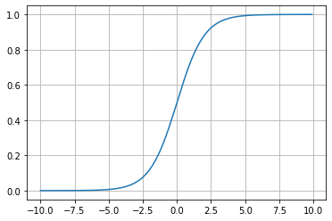

Visión por Computadora y Deep Learning
Diego Kiedanski
7 de Agosto
Objetivos
- Ejemplos motivadores
- Repaso de redes neuronales
- Imagenes como matrices
- Componentes tradicionales de una CNN
- GPU
Ejemplos
De quién es esa cara?
Gatos y líneas
Repaso de Redes Neuronales
Capas completamente conectadas

Perceptron
:
Backpropagation
Típicas funciones de activación: Relu
\[ f(x) = \max\{x, 0\} \]
Típicas funciones de activación: Tanh
\[ f(x)={\cfrac {e^{x}-e^{-x}}{e^{x}+e^{-x}}} \]
Típicas funciones de activación: Sigmoide
\[ f(x) = \frac{1}{1+e^{-x}} \]

Epoch vs Batch vs Iteration
Epoch
- Todo el dataset hace una pasada (A y A)
- El dataset pasa una sola vez
- Se pueden necesitar muchos Epochs
Batch
- Todo el dataset no entre de una.
- Se divide en distintos batches.
- Pueden cambiar de epoch a epoch
Iteration
- Es la cantidad de batches necesarios para completar un epoch.
Imágenes como matrices
- Necesitamos representar imágenes en computadora
- La representación tiene que ser entendible por una computadora: números.
- Idea: partir imágenes en pixels y asignarle a cada pixel un color.
- Idea: cada color se representa de forma numérica.
Red - Green - Blue (RGB)
- Todos los colores se pueden representar como una mezcla de rojo, verde y azul.
- Normalizamos la cantidad de de cada color del 0 al 100% (o del 0 al 1).
- Representar decimales en una computadora es difícil, enteros es más fácil.
- Con 8 bits tenemos 256 niveles. Idea: RGB cada uno ocupa 8 bits y varían en \([0, 255)\)
Pixels como entrada de matrices
- Para una imagen en blanco y negro, usamos una sola matriz.
- Cada pixel representa la intensidad entre blanco y negro.
- Para imágenes a color, usamos 3 matrices del mismo tamaño, una para cada canal: RGB.
Ejemplo

Redes convolucionales
- En general las redes convolucionales son arquitecturas profundas con algunas capas especiales.
- En particular, el nombre viene del uso de capas convolucionales (más en breves)
- Menos libertad que una red “fully-connected”, pero mejores en la práctica.
Capa convolucional
- Creamos un bloque de pesos mucho más chico que la imagen original.
- Calculamos la multiplicación de ese bloque y una parte de la imagen.
- Vamos moviendo el bloque a través de la matriz. Se usan muchos menos pesos.
Capa convolucional
Capa convolucional
- Diferencia entre el pixel original y su pixel a la izquierda.
- Imágenes tienen tamaño 280 x 320 pixels.
- Usando convoluciones require: \(319 × 280 × 3 = 267960\) operaciones
- Usando “fully-connected”: 320 × 280 × 319 × 280
- 4 billones de veces más eficiente.
Capa “pooling”

Capa “pooling”
- Remplaza una vecindad con una estadística de la vecindad
- Permite reducir la dimensionalidad de la imagen.
- Equivalente a tener una “prior bayesiana”
- Pooling hace la activación “invariante” a pequeñas traslaciones
Capa “pooling”

Batch Normalization
- Los mini-batches cambian de distribución
- Esto complica el aprendizaje (descenso por gradientes)
- Idea, normalizar después de cada convolución, antes de activación

Global Pooling + FC + Softmax
- Última capa para clasificación de imágenes
- Global pooling toma todo el promedio por canal
- Luego, FC del tamaño de la cantidad de clases
- Salida es un vector igual a la cantidad de clases.
- Función softmax para calcular probabilidad por clase.
Resnets
Resnets

Graphics Processing Units (GPU)
- Son circuitos diseñados para procesar imagenes de forma rápida
- Se originaron en la industria de los videojuegos en los 70’
- Permiten realizar muchas operaciones similares (aritmética) en paralelo.
- NVIDIA es el fabricante más conocido.
GPUs y aprendizaje profundo
- La operación de convolución es fácilmente paralelizable
- Esto es xq usa los mismos parametros para toda la imágen.